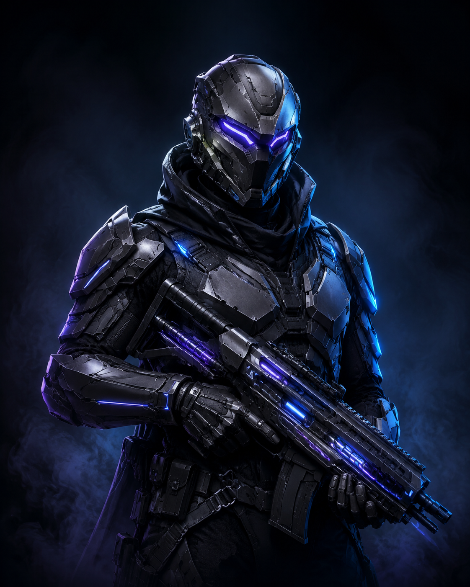
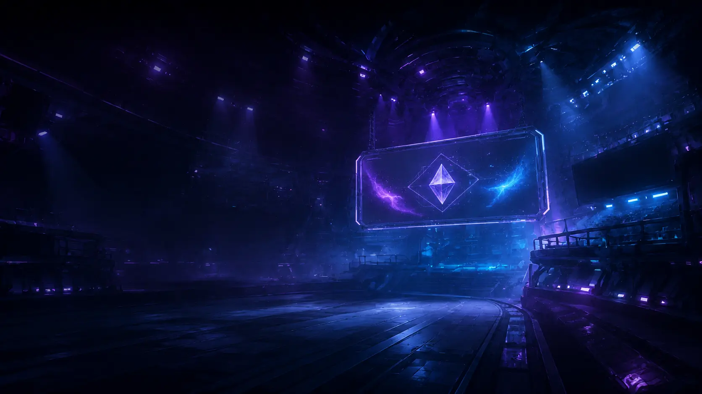

01 / COMPETIÇÃO
Torneios & campeonatos
Chaves, regulamentos, fases e resultados em uma experiência única quando as competições forem publicadas.
# A NOVA CASA COMPETITIVA DO ECHO ARENA
Uma experiência dedicada a torneios, campeonatos e ligas — profissionais, amadoras, de sindicatos ou de empresas — conectada à identidade que o jogador já usa na Arena.

Chaves, regulamentos, fases e resultados em uma experiência única quando as competições forem publicadas.
Estrutura para quem compete no mais alto nível e para comunidades que querem organizar sua própria temporada.
Campeonatos internos com identidade própria, acesso controlado e a força visual do Echo Arena.
# UM PALCO PARA CADA TIPO DE COMPETIÇÃO
Os circuitos abaixo representam a arquitetura da experiência. Nenhuma competição ou placar foi publicado ainda.
Temporadas, classificatórias e finais para organizações competitivas.
Um caminho claro para equipes, coletivos e novos competidores.
Competições organizadas para categorias e comunidades representadas.
Experiências internas com identidade, regras e acesso da organização.

# DO ECHO ARENA DIRETO PARA A COMPETIÇÃO
O Echo Circuit pertence ao Echo Arena. O acesso reconhece a mesma sessão, sem criar uma segunda conta ou separar a história do jogador.
A sessão segura da Arena está sendo consultada.
# SUA TRAJETÓRIA COMPETITIVA
O fluxo foi desenhado para ser simples. As etapas serão ativadas conforme os torneios reais entrarem no Echo Circuit.
Acesse com seu Echo ID.
Encontre uma competição publicada.
Acompanhe regras, fases e partidas.
Resultados reais formarão sua jornada.
ECHO CIRCUIT / FUNDAÇÃO COMPETITIVA